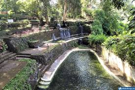
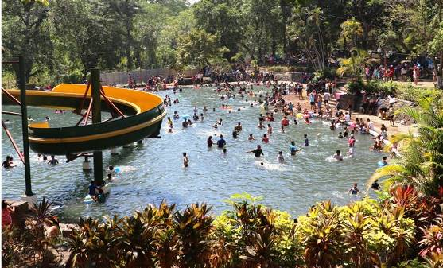
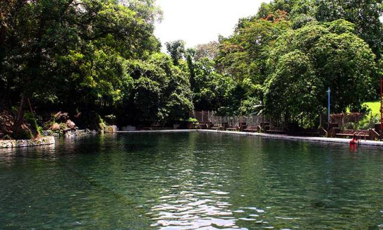
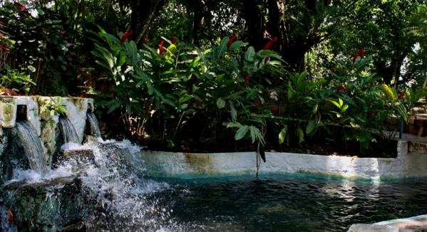
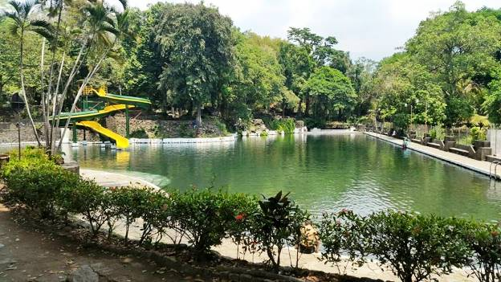
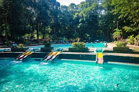

Izalco: Sonsonate
Atecozol, ubicado en Izalco, Sonsonate, brinda a los visitantes el servicio de dos piscinas naturales -una para adultos y la otra para niños-, área de picnic, restaurante, cabañas, cancha de fútbol, cancha de pelota maya; además, ofrece una experiencia singular con su temazcal, donde puedes disfrutar de la reconexión con tus antepasados.
Otro dato muy atractivo para destacar, es que el lugar posee vestigios culturales que incluyen obras del escultor nacional Valentín Estrada, haciendo homenaje a personajes y leyendas como “La Cuyancúat”, “Atonal, Cacique de Acajutla”, “Tlaloc, dios de las lluvias” entre otras.

Después de todo, los paisajes que lo rodean lo han convertido en uno de los favoritos de los turistas que buscan algo diferente.
¿Cómo es el turicentro Atecozol?
Una característica que destaca a Atecozol del resto de los parque acuáticos se trata de su ubicación Después de todo, está situado en el medio de la zona que hizo famoso a El Salvador en su tiempo, la Costa del Bálsamo
.
En este espacio, naturalmente estos árboles de corteza aromática han proliferado por años. Por ello, quien visite este parque tiene la oportunidad de disfrutar de la deliciosa esencia que desprenden.
Asimismo, la vista es otro factor que hace a este parque único. Después de todo, desde su interior es posible disfrutar de la vista del imponente Volcán de Izalco.
¿Qué ofrece este parque acuático?
Dentro de sus 24 manzanas de extensión, este turicentro cuenta con una variedad de atracciones con las que divertir a sus visitantes. Por ello, ahora nos encargaremos de contarte con lujo de detalle en qué consiste cada una.
Disfruta de las piscinas naturales

El primer detalle que debemos mencionarte sobre este parque es que el agua que surte sus piscinas es de origen natural. Para el caso de los adultos, estos cuentan con un total de 2 espaciosas albercas de las que disfrutar en el complejo.
Los más pequeños también tienen dónde divertirse
Así como existen 2 piscinas para el uso adulto, en el parque existen 5 más pequeñas destinadas para los niños. En ellas, los más pequeños podrán encontrar estructuras como toboganes y cascadas con las que podrán jugar y divertirse.
Diviértete practicando tu deporte favorito
Otro detalle que hace de las instalaciones del parque acuático Atecozol de las más completas, son sus canchas. Después de todo, disponen de dos espacios, uno de fútbol y otro de básquet, entre los que los visitantes pueden elegir para entretenerse.

Prueba los merenderos típicos
Dentro del parque también están ubicados varios merenderos típicos destinados a despachar comida típica. De este modo, la experiencia vacacional es complementada con una propuesta gastronómica popular y endémica.
Pasea por el hermoso vivero
Como hemos dicho con anterioridad, este espacio cuenta con un suelo fértil en el que el bálsamo prolifera con facilidad. Asimismo, hay otras plantas hermosas propias de la zona que también lo hacen y que podrás contemplar de cerca en el video.
Vive un día distinto en las áreas de picnic
Si no quieres solo sentarte a comer en los merenderos, puedes mudarte a las zonas de picnic. En ellas, podrás entrar en contacto con la naturaleza mientras te deleitas con los platos típicos salvadoreños.
¿Dónde está el parque acuático Atecozol?
Este turicentro forma parte de la larga lista de parques acuáticos que existen en El Salvador. Específicamente, se encuentra ubicado en el departamento de Sonsonate dentro de la ciudad de Izalco. Es decir, se encuentra a tan solo 58 kilómetros de la capital salvadoreña.

Horarios:
De lunes a domingo de 8:00 a.m. a 4:00 p.m.
Tarifas:
Nacionales: $1.50
Turistas extranjeros: $3.00